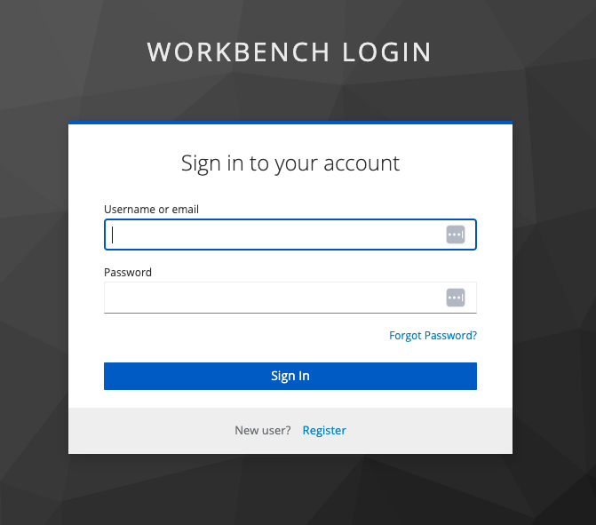

User Guide
All Workbench users have the ability to install and launch UserApps
Typical User Flow
A typical user of the app would likely follow these steps:
Login to Workbench
Go to “All Apps” to view all AppSpecs offered by the system
Find an AppSpec to install, then click the + button
On the “My Apps” view, your chosen UserApp should now appear
Click the Launch button on your UserApp to start it up
Wait for the status to turn green
Expand the running app - you should see a link appear in the expanded section
Click the link to navigate to your launched UserApp
When you’re finished using the app, click the Shutdown button
Wait for the app to finishing shutting down
Click the Delete button to remove the UserApp from your list
Landing Page
Depending on how your administrator has configured Workbench, there are two ways to log into the platform: username/password or OIDC
Typically we recommend configuring some form of OIDC for production instances, but this is not always appropriate.
Login with Local Username / Password
{kind=link}
User navigates to WebUI and clicks the Login button
User is sent to the OAuth2 Proxy’s /oauth2/start endpoint
/oauth2/start begins the OAuth chain, which starts by automatically redirecting the User to Keycloak
User enters their username / password into the form and clicks “Sign In” at the bottom
After login, User is automatically redirected back to the Workbench WebUI with a valid auth token set as a cookie.
This cookie is automatically sent to the Workbench API server with every subsequent request
Login with an OIDC Provider (e.g. CILogon)
{kind=link}
User navigates to WebUI and clicks the login button
User is sent to the OAuth2 Proxy’s /oauth2/start endpoint
- /oauth2/start begins the OAuth chain, which starts by automatically redirecting the User to Keycloak
If ONLY OIDC is enabled (no username/password), you will be redirected to the provider’s login page
User logs in with provider credentials
After login, User is automatically redirected back to the Workbench WebUI with a valid auth token set as a cookie.
This cookie is automatically sent to the Workbench API server with every subsequent request
All Apps
{kind=link}
This view shows the entire catalog of our available AppSpecs
With this view, we can:
Search / Filter to find applications that we can create
Create a New Application Instance - this will create a new item under “My Apps”
My Apps
{kind=link}
With this view, we can:
Launch / Shutdown an Application Instance (App)
Go to a running application
Access the Console of Running App